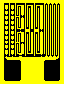

Circuits Refinements command
As supplied, C13 patterns have an uncut resistance of either 40 or 80 ohms �20% at 75 deg F (24 deg C). They can be adjusted upward to a value of either 96 or 192 ohms �20% by cutting various ladder rungs.
Using an appropriate degree of magnification (preferably under a stereoscopic zoom microscope), locate the cutting points on the resistor pattern. Cuts may be made with the tip of a scalpel blade, or with a tool made by slightly flattening the end of a dental probe (Micro-Measurements Part No. DPR-1). Lightly cut through each end of the shorting bar and remove the center section leaving a path clear of foil. Care must be taken to avoid cutting through the backing to the specimen.
The approximate cuts to produce a desired overall pattern resistance can be estimated from the following information for the appropriate pattern; however, many variations may be employed and experimentation may be required to determine the optimum cutting sequence. For example, if steps are cut progressively downward starting from the top of any ladder (for all above patterns), very small changes in resistance are produced. Cuts made in this manner will represent larger changes as the step nearest the large solder tabs is approached.
Note that the actual resistance increase caused by cutting any given step can vary up to 20% of the nominal value. Therefore, it is desirable to plan a series of cuts that will allow the final resistance value to be approached slowly enough to avoid overadjustment. Fine adjustment can also be achieved by gently polishing active portions of the network with 325-mesh alumina powder. This procedure is not recommended when maximum stability is required, however.
Adjustments
The resistance changes produced by cutting the various adjustment steps are specified in terms of Rmin, the uncut pattern resistance. The data tabulated is typical and was obtained by cutting progressively upward starting with the step nearest the soldering tabs in each respective ladder.
| Ladders
 |
Resistance Change (%Rmin) |
| Left | 1 |
| Left Center | 1 |
| Center | 10 |
| Right Center | 20 |
| Right | 20 |